Introduction
- What is Long Transcription (LT)?
It is a system which contains longer conversation audio clips, either one-sided or including multiple speakers which must be transcribed as per the rules and regulations of Guideline along with the Instruction manual.
You will be listening to the dialogue that will likely contain multiple speakers. Your job is to identify and mark when each speaker is speaking and segment the corresponding audio.
Some of the audio will contain background noise, background music, and ringtones; this must be marked too.
- What are the key points I need to remember to work on the project?
The key points are as follows (Please refer to FAQs/video guide below for details):
- You will need to create speaker segments (box) and annotations following the rules of the system.
- Speaker types are commonly categorized into three:
- Annotation types are commonly categorized into following:
**Do not focus on the above two points, work on these points only if confident of unintelligible and PII parts. (Please refer to the prefill text for gaining confidence.)
- 100 ms segment rule
This rule indicates that you will need to keep extra 85-100ms segment at start and end of each segment where possible to avoid cutting off words outside segments
- 30 second split rule
This rule indicates that no speaker segment should exceed 30 second. If a speaker speaks continuously for more than 30 seconds, a separate speaker segment needs to be created for speech after 30 seconds, and so on. >
- 500 ms split rule
This rule indicates that if there is a gap of 0.5 second between words, separate segments need to be created for those two words.
**Note that 30 seconds, 100 ms, and 500 ms rule does not apply to annotations.
Screenshot references of interface of system
-
Audio UI screenshot:
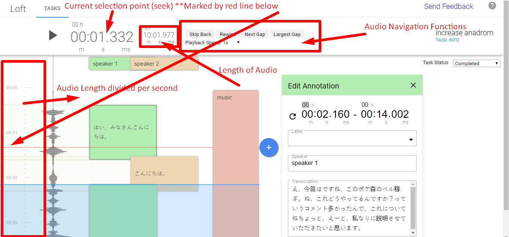
-
Speaker/Annotation UI screenshot:
`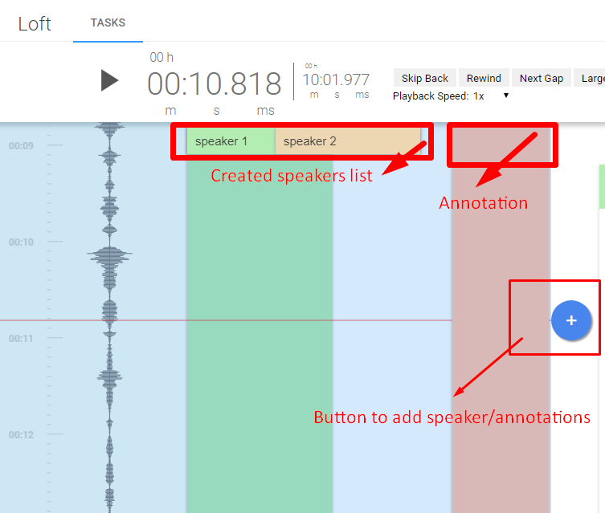
Step-wise description of the procedure to work on the system of LT
Here is the screenshot of the LT UI (User Interface).
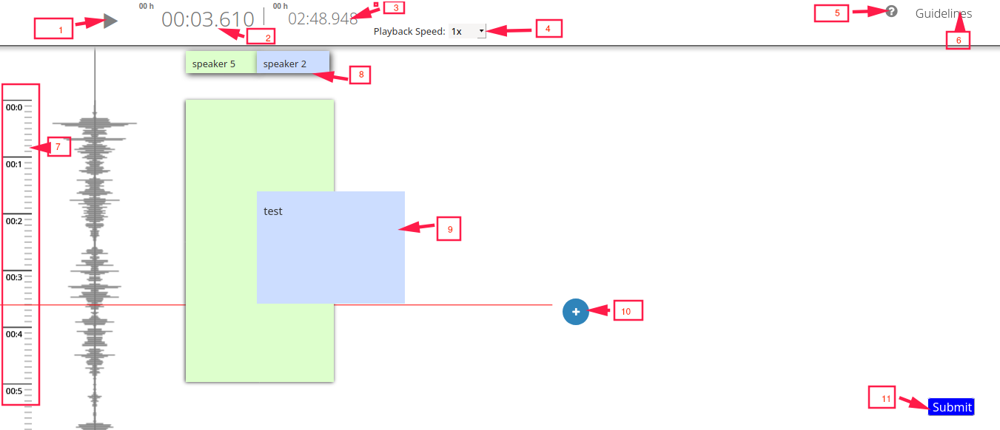
LEGENDS:
1. Play/Pause Button: Use this button to play or pause the clip.
2. Running time(seek): Indicates run time at particular point of the clip.
3. Total Length: Indicates the total length time of the task
4. Playback Speed: Select the speed from the drop down to vary the speed according to need for clear understanding of the speech.
5. Shortcut Keys: Use shortcut keys.
6. Guidelines: Use this to access the Guideline and the Instructions on how to use the system UI.
7. Audio wave: You can see audio wake here
8. Speaker Identification Tab: This tab displays the added speaker by the transcriber. Indicates how many different speakers have been created.
9. Created Segment: Use the + button [See Legend#7] to add the speaker and create a segment for the speech to be transcribed. Refer to Guideline/Instructions for further assistance.
10. Add Button: Use this button to create the segments for speakers and annotations. Regular speaker, prerecorded speaker, unidentifiable speaker. Refer to Guideline/Instructions on how to add and use the annotations.
11. Submit: Click submit button after you complete task.
Working on the system
Creating a Turn: Press the + button to create a segment. If any pre-filled segments are present, do not edit the segments, they are there for assistance in transcribing. Create a new segment for each case.
Task Info>>Instructions: Follow the rules for tagging and transcribing speaker segments for long-form audio. Transcribe ALL speech that is heard, this includes pre-recorded and synthesized speech. For speech that is unintelligible, foreign, or singing, please refer to the relevant section(s).
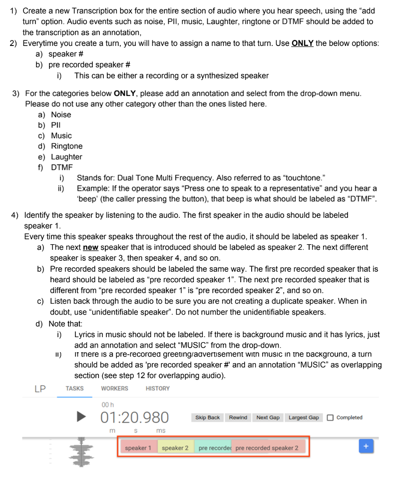
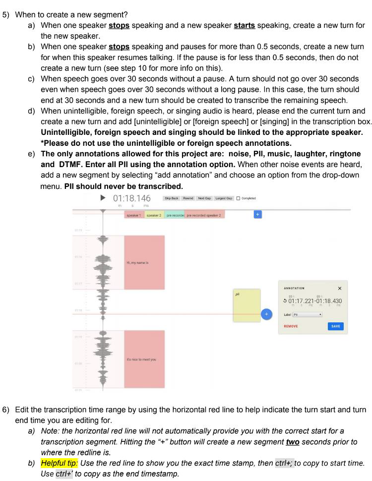

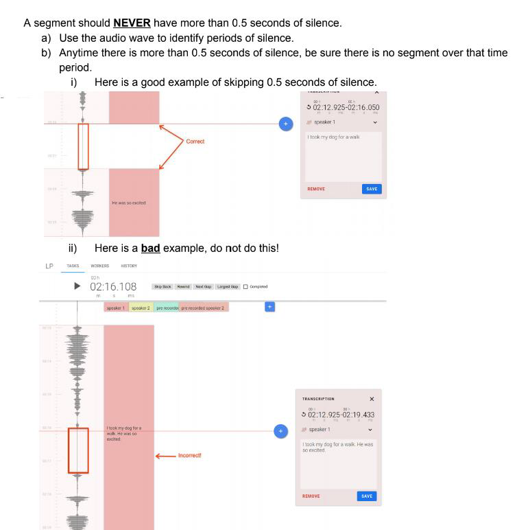
Segmentation
If overlapping speech is occurring: the segment boundaries should be accurate with at least 100milliseconds precision, if possible.
If overlapping speech is NOT occurring, the segment boundaries do not have to be 100% precise but should start and end within 85-100milliseconds from when the speaker begins/ends their speech. The boundaries should not overlap with the same speaker turn next to the segment. Speaker turns should not contain pauses in speech that are longer than 0.5 seconds. If a speaker does pause their speech for longer than 0.5 seconds, end the speaker turn before the pause then create a new turn for when the speaker resumes talking.
Speaker Labelling
All speaker labels should be consistently formatted. Speaker labels should always: be in all lowercase, be spelled correctly, and should not contain underscores or hyphens. A validator within the tool will prevent you from submitting incorrect formats.
Correct: speaker 1
Incorrect: Speaker 1
Correct: pre recorded speaker 1
Incorrect: pre-recorded speaker_1
Correct: unidentifiable speaker
'speaker #' Used for different speakers in the audio. Includes a number that corresponds to each different speaker.
'pre recorded speaker #' Used when there is speech coming from a machine. Includes a number that corresponds to each different pre recorded speaker.
'unidentifiable speaker' Used when you cannot identify who the speaker is. Does not ever include numbers.
'speaker Tom' Used when the name of a speaker becomes known. The names of speakers should always be capitalized. You can use first and last names. (Note: adding speaker names will be allowed for some projects but not others. In tool validators will indicate whether or not you can submit a speaker name.)
Speaker Formatting
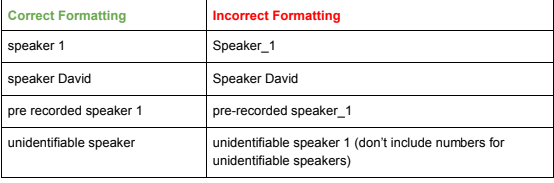
***FAQs
- The segment beginning/end must contain a 100MS gap.
Please be sure that the beginning and end of each segment contains a 100MS gap at most. Do not exceed 100MS. It can lay somewhere in between 85-100MS, but should not exceed 100MS. Be more precise on this rule in every created segment and note to apply the 100MS rule accordingly in each created segment. Do not use this for annotations.
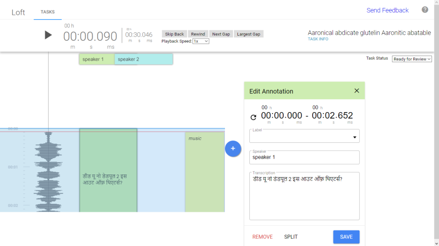Here, the speaker has started speaking from 00:00.090 and the segment has begun from 0:00.000 which lies in between 85-100MS. Please use this rule at the segmentation end as well.
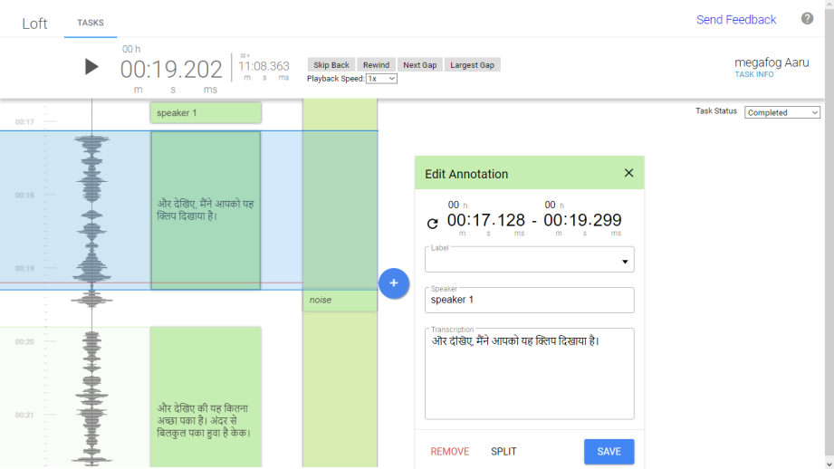
Here, the speaker stops speaking at 00:19.202 thus the segment ends at 00:19.299, which is approximately a 100MS gap.
- 0.5-sec pause between two utterances must be split into two segments.
Whenever the speaker pauses for 0.5 sec/500MS between the previous and next utterance, then the segment must be split into two parts.
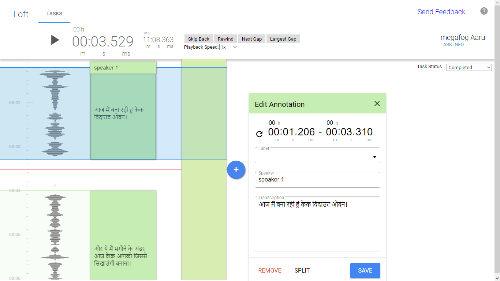
Here the speaker stops speaking at 00:03.219 and again begins speaking at 00:04.080 which clearly has a gap/pause of greater than 0.5 seconds or 500MS. Thus, in these cases, two separate segments must be created.
- Use of annotation
Be precise on the timestamp of the annotation. Annotation must run only up to the required mark, not more or not less.
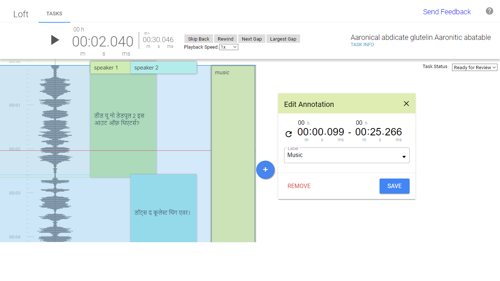
Make sure that the created annotation covers the intended sound of the audio. Be precise on the use of annotation, it should not contain 100MS gap as per the segmentation rules.
- 30-second split rule
If a segment runs longer than 30 seconds then please split the turn at the 30-second mark and create a next segment to transcribe after 30 seconds. Create new segments each at the 30-second mark. Make sure if a word lies at the 30-second mark then omit the word at first segment and
include it in the next segment so that the word is not split into two segments.
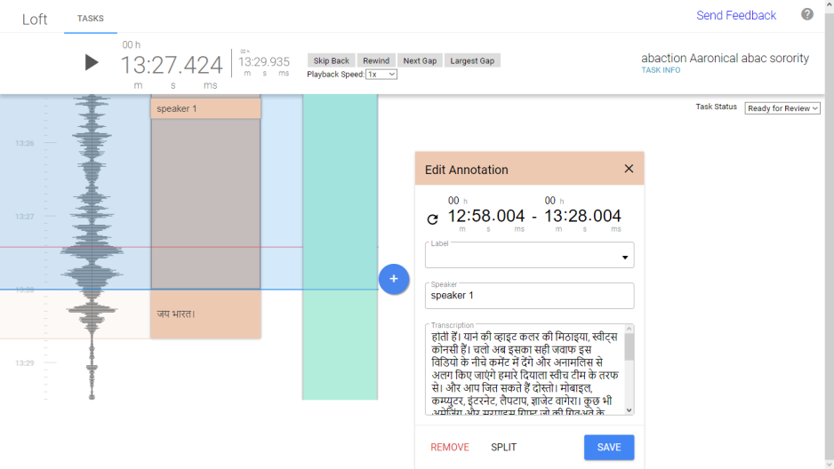
Here, the speaker speaks from 12:58.004 to 13:28.580 which is greater than 30-seconds. Create a segment upto 30-second mark, i.e. 13:28.004 and create a new segment from 13:28.005. Thus, at every 30-second mark a new segment must be created if a single segment intends to run for longer than 30 seconds.
- Make sure that the sound for the intended segments/annotations are covered up.
Also, do not miss any transcription. Instances where the segment does not cover up the audio must be avoided.
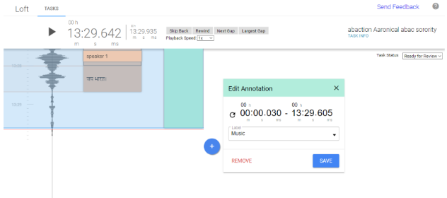
Here the music runs upto 13:29.814 but the annotation runs only upto 13:29.605, thus this must be avoided. The music annotation must run upto 13:29.606 at least in order to cover up the required sound in the audio.
- At least 1MS gap between multiple segments on a constant flow of speech
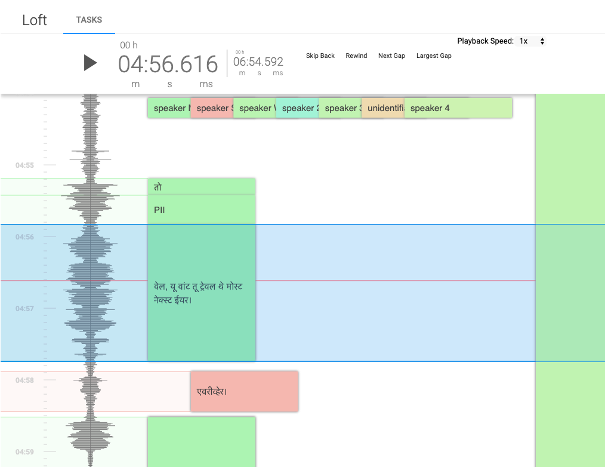
**Please be cautious that multiple segments of the same speaker must contain at least a gap of 1MS so that it does not overlap the previous segment. If a segment ends at 00:03.579 and PII begins, then the start time of PII must be 00:03.580 and so on.
- As soon as you click the “+” button within a Loft task the new Edit Annotation window will appear. The view of the Edit Annotation window will change based on which you label you select.
Please see the 3 scenarios below for how the Edit Annotation window could change and what you should do in each case.
○ Action: Choose label: no label (blank), or Singing.
○ View: The Edit Annotation window stays the same.
○ Follow-up action: Transcribe the audio and assign the appropriate speaker. Set the appropriate turn start and end time and hit “Save.”
○ Tip:
Do not use bracket tags in the transcription box [unintelligible] [foreign speech] [singing].
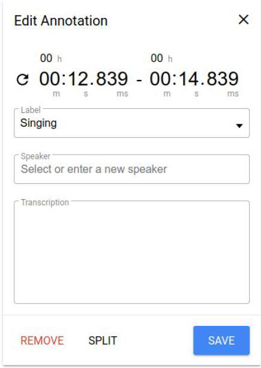
○ Action: Choose label: PII/Foreign Speech/Unintelligible.
○ View: The Transcription box disappears.
○ Follow-up action: Assign to the appropriate speaker. Set the appropriate turn start and end time and hit “Save.”
○ Tip:
The transcription box disappears because PII, Foreign Speech, and Unintelligible speech should not be transcribed.
PII, Foreign Speech and Unintelligible labels will automatically appear in the turn in all caps.
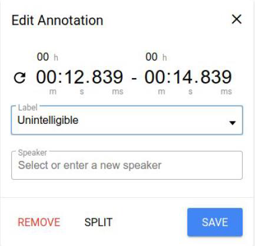
○ Action: Choose label: Applause, DTMF, Laughter, Music, Noise, RingTone, or Unknown.
○ View: The Transcription box and Speaker box will disappear.
Follow-up action: Set the appropriate turn start and end time and hit “Save.”
○ Tip:
These labels do not require transcription.
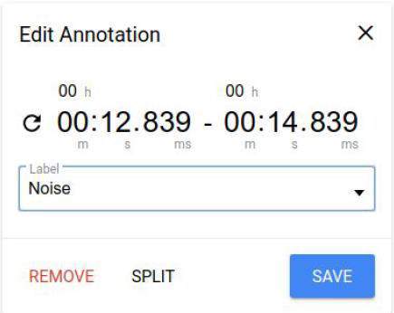
***Video Guides for LT system
Please go to this link. This video covers the following topics listed below:
https://www.youtube.com/playlist?list=PLzicDqm9vmqbzq5a0-5rU9Aoy711PhyiP
- 30 seconds rule
- 500ms rule
- Creating speaker turn and 100ms rule
- Add music/noise annotation
- Labelling known Speaker
- Non-PII
-
PII/unintelligible segment/ formatting/1ms rule